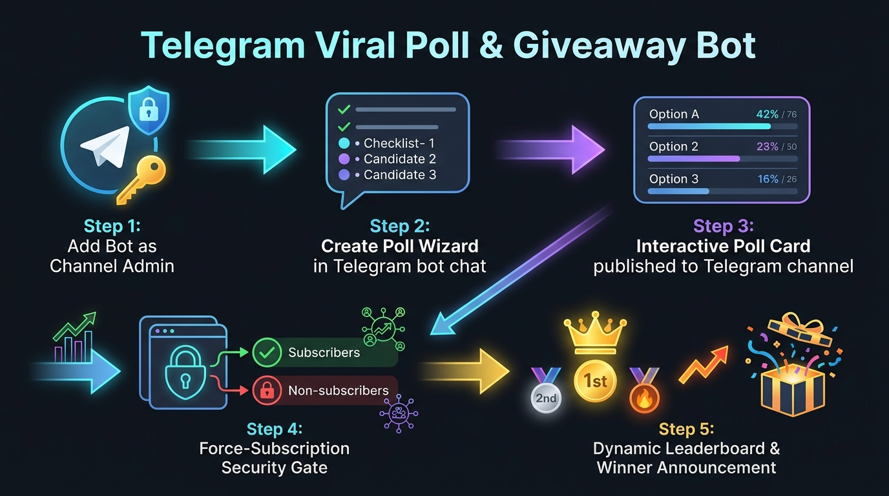

সম্পূর্ণ কাজের প্রবাহ, সেটআপ ও পরিচালন ম্যানুয়াল (Visual Architecture & Operational Manual)

বটটিকে আপনার টেলিগ্রাম চ্যানেলে Administrator হিসেবে যুক্ত করুন।
বটে /newpoll দিলে ধাপে ধাপে টাইটেল ও অপশন চাইবে।
ভোটিং প্রসেস, ফোর্স-সাবস্ক্রিপশন এবং ডায়নামিক উইনার ঘোষণা কীভাবে কাজ করে
ভোটার চ্যানেলে জয়েন না থাকলে ভোট গ্রহণ হবে না। টেলিগ্রামেই সরাসরি পপআপ অ্যালার্ট আসবে।
ভোটের সংখ্যার ওপর ভিত্তি করে বাটনের আইকন স্বয়ংক্রিয়ভাবে পরিবর্তিত হয়।
নির্ধারিত সময় (যেমন ১ ঘণ্টা বা ২৪ ঘণ্টা) শেষ হলে চ্যানেল মেসেজ লক হয়ে যায় এবং ক্রিয়েটরকে উইনার কার্ড পাঠানো হয়।
স্ক্রিনের অতিরিক্ত বাটন ডুপ্লিকেশন দূর করা হয়েছে। দরকার হলে কিবোর্ড ওপেন ও বন্ধ করা যায়।
| কমান্ড | কাজ | ব্যবহারকারী |
|---|---|---|
/start |
মূল ইনলাইন ড্যাশবোর্ড ও মেনু চালু করা | সকল ইউজার |
/newpoll |
নতুন পোল বা গিভঅ্যাওয়ে তৈরি শুরু করা | সকল ইউজার |
/mypolls |
নিজের তৈরি করা সব সক্রিয় ও বন্ধ পোল দেখা | পোল ক্রিয়েটর |
/channels |
যুক্ত থাকা চ্যানেলগুলোর তালিকা ও পারমিশন দেখা | চ্যানেল ওনার |
/admin |
গ্লোবাল পরিসংখ্যান, ব্রডকাস্ট ও স্পনসর সেটিংস | সুপার এডমিন (8370293945) |
/cancel |
চলমান যেকোনো পোল তৈরির প্রক্রিয়া বাতিল করা | সকল ইউজার |